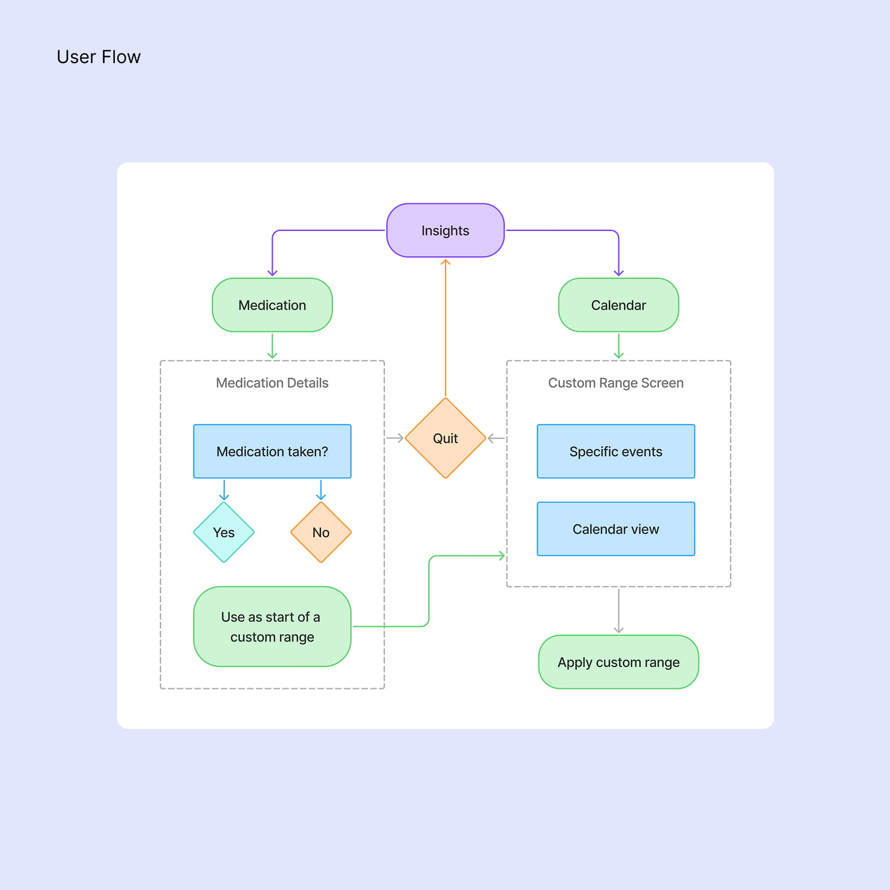
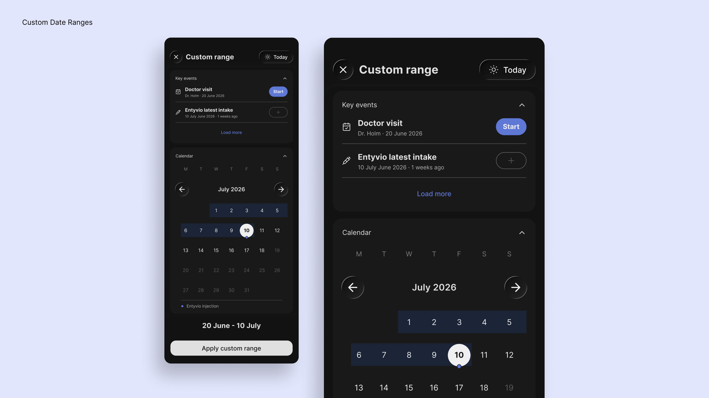
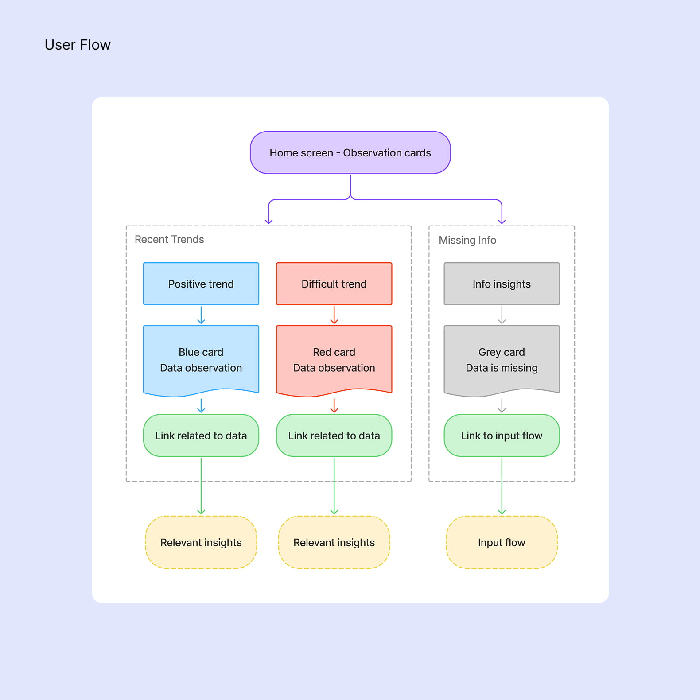
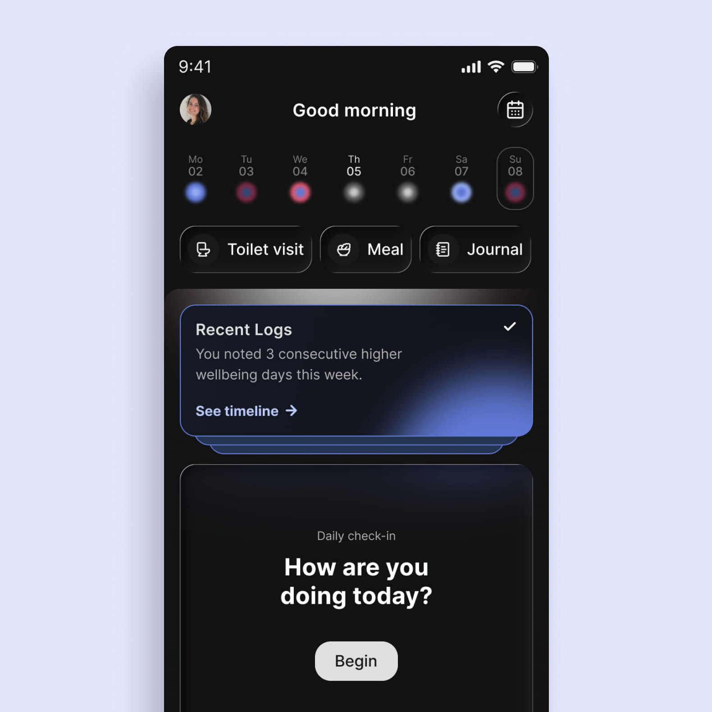
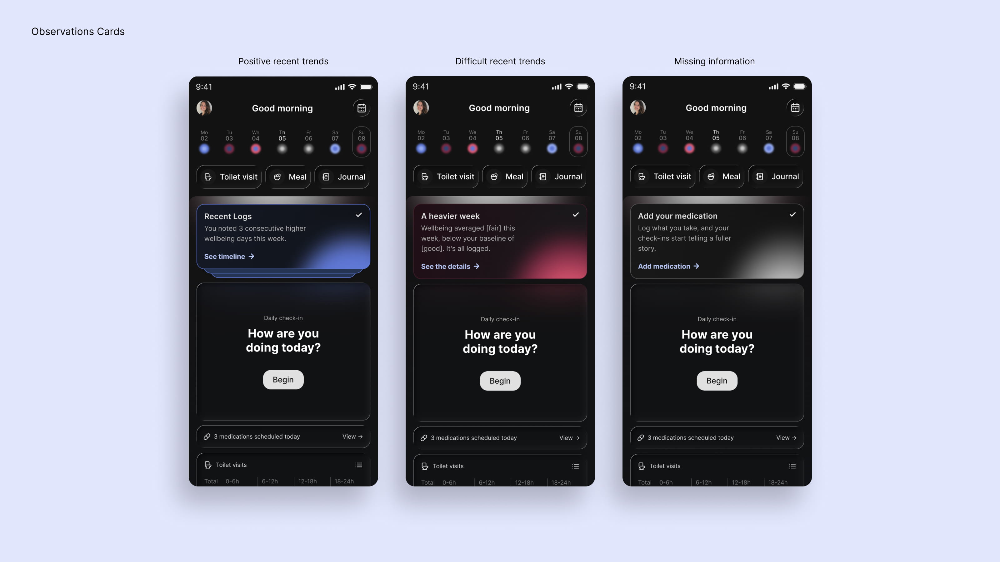
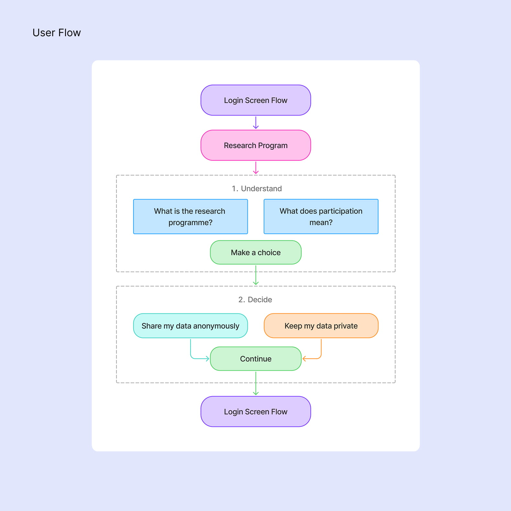
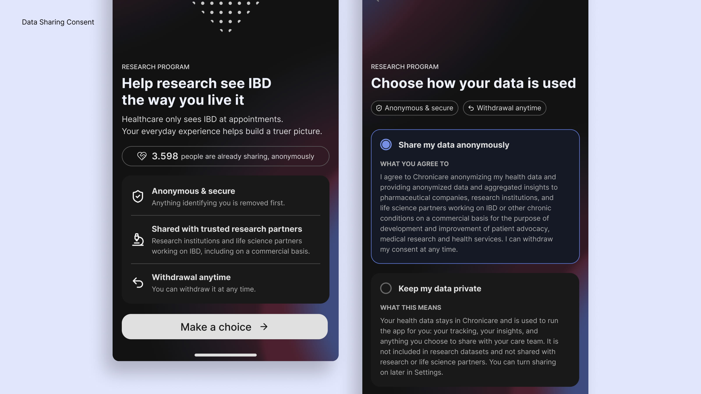

Product Design for the Chronicare App
Company
Chronicare
Industry
Digital Health (HealthTech)
Role
Product Designer
Responsibilities
Product Design • UX/UI Design • User Flows • Prototyping • Accessibility • Agile Collaboration

Overview
Chronicare is a digital health platform that empowers people living with chronic conditions to better understand and manage their health. By combining symptom tracking, personalised insights, and community support, it helps users identify patterns, make informed decisions, and build healthier daily habits.
My role
I contributed to the evolution of the Chronicare mobile app by improving existing experiences and designing new features that support people living with chronic conditions. Working closely with the founders and developers in an agile environment, I translated user needs and business goals into intuitive, accessible, and scalable design solutions.
My work included mapping user flows, exploring concepts through wireframes and prototypes, designing high-fidelity interfaces in Figma, and contributing to the design system to ensure a consistent experience across the app. To accelerate ideation, I used Claude Design to quickly explore design directions and iterate on concepts before refining them in Figma. Each feature was developed through an iterative process of collaboration, feedback, and refinement before developer handoff.
Medication Markers & Custom Date Ranges
Context
Chronicare's Insights help users understand patterns in their health data over time. As more types of data are brought together, users need to be able to connect these trends with important events, such as starting a medication, having an injection, or visiting a doctor.
I worked on two connected improvements: introducing medication events directly into the Insights graphs, and creating a new way to explore data between specific dates or events.
GOALS
01.
Connect medication to health trends
Make medication events visible within compact Insights graphs, while providing enough context for users to understand what happened and when without overwhelming the visualisation.
02.
Make specific periods easy to compare
Create a simple way for users to select a custom time range using either important events or specific dates, making it easier to explore how their health trends changed between two points in time.


Solution
I introduced small medication and injection markers directly into the Insights graphs, using an icon and dashed line to indicate the exact day of an event. Tapping a marker opens a contextual module with the medication, date, and an option to confirm an event that may have been missed. From there, users can also access the new custom date range experience.
I added a calendar entry point to both the Insights overview and detailed views, leading to a dedicated custom range screen. Users can choose from relevant events, such as a last injection or doctor visit, or select their own dates directly from the calendar. Reusing patterns from the existing calendar helped make the new flow feel familiar, while the event shortcuts provided a faster way to define meaningful periods.
To test the flow and identify potential friction early, I created an interactive prototype with Claude Design. This allowed me to explore the complete experience from the graph marker through to selecting a date range and refining the interactions before moving into the final designs.
AI-Generated Topics
Context
The Connect section is where users share experiences, ask questions, and support one another throughout their health journey. To make conversations easier to discover, the team wanted every post to be automatically categorized with relevant topics, laying the foundation for a future topic-based search experience.
GOALS
01.
Design an AI-assisted topic generation flow
Design an intuitive flow that allows the LLM to analyze a user's post, suggest relevant topics, and give users the opportunity to review, edit, or add additional topics before publishing.
02.
Create a reassuring loading experience
While the AI processes the post, provide visual feedback that communicates progress and reassures users that their content is being analyzed.


Solution
I designed a lightweight flow that integrates AI-generated topic suggestions directly into the posting experience. After submitting a draft, users are presented with a dedicated loading state before reviewing the suggested topics. They can remove incorrect suggestions, browse additional topics, or add their own before publishing.
To make the waiting experience feel intentional, I designed an animation inspired by Chronicare's brand identity. Two gradient spheres derived from the logo move toward each other and orbit like celestial bodies, creating a calm visual metaphor for the AI finding meaningful connections within the user's post.
Observation cards
Context
The home page brings together the information users need for a quick overview of their health. To make recent patterns more visible, Chronicare wanted to introduce Observation Cards above the daily check-in.
The cards surface either a recent trend or information that is missing, giving users a quick way to understand what is happening and an entry point to explore the underlying data in more detail.
GOALS
01.
Make trends easy to scan
Create a compact visual language that lets users recognise the direction of a trend at a glance, without needing to interpret complex data.
02.
Communicate observations without judgement
Design a neutral and supportive way to communicate changes or missing information, keeping the focus on what the data shows rather than implying that a change is positive or negative.



Solution
I designed a flexible card system with two types of observations: recent trends and missing information. Trends use Chronicare's colour language to communicate direction at a glance—blue for upward trends, red for downward trends, and grey when more information is needed. Each card provides a short observation and can be opened to explore the underlying data in more detail.
The copy was designed to remain factual and non-judgemental. Rather than describing a trend as better, worse, increased, or declined, the language simply reflects the direction relative to the user's baseline. CTAs follow the same principle: positive trends use “See the trend”, while more difficult or neutral observations use “See the details”. This keeps the experience supportive without turning health data into a judgement or recommendation.
Improving Data Sharing Consent
Context
Data sharing plays an important role in Chronicare's research programme, helping transform patient experiences into insights that can contribute to a better understanding of chronic conditions. However, around 50% of users were leaving the existing consent flow, highlighting an opportunity to improve comprehension and engagement without influencing the user's decision.
GOALS
01.
Improve comprehension
Make the purpose and implications of data sharing easier to understand, giving users the context they need to make an informed decision about participating.
02.
Keep the choice balanced
Create a consent experience that presents opting in and opting out as equally valid choices, avoiding emotional pressure while clearly communicating the value of contributing to research.


Solution
I redesigned the consent experience as a two-step flow. The first screen introduces the research programme and explains what participation means for the user in clear, approachable language. The second focuses on the decision itself, presenting both options with balanced copy so that neither choice feels like the easier or more expected path. The opt-in experience retains the required legal information while keeping the overall presentation approachable and easy to understand.
To make the introduction feel more human without relying on emotional language, I explored a subtle visual metaphor based on Chronicare's brand identity: a heart gradually filled with individual dots. Each dot appears with a gentle pulse, representing how individual contributions can come together to support future research. The animation reinforces the idea of collective care while keeping the decision itself neutral and user-led.